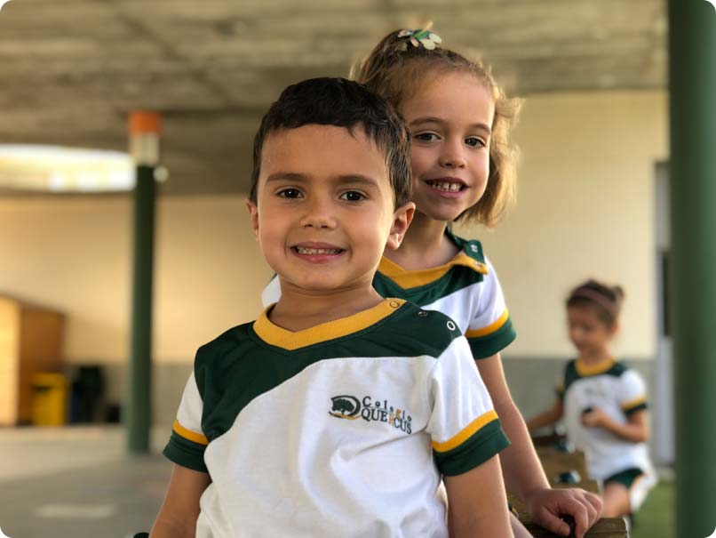

Idiomas
Inglés desde los dos años en grupos reducidos y alemán desde 5.º de Primaria.

El Colegio
Queremos que aprendan, que se formen y que sean felices. Solo si somos capaces de generar ese clima podrán desarrollar al máximo todo su potencial.
Somos un colegio abierto, no discriminatorio, en el que se hace realidad el sentimiento colectivo de toda la comunidad escolar y en el que, a través de un clima educativo adecuado, se consigue la formación integral de nuestros alumnos.
Nuestro rasgo distintivo es la importancia que damos a la relación con ellos, al conocimiento de su mundo y sus necesidades.
Para ello es necesario, en primer lugar, contar con un equipo de profesorado estable, competente y experimentado en continua formación. Solo así la educación puede ser verdaderamente individualizada, integral y comprometida con el conocimiento de nuestros alumnos.
En este trabajo de atención y seguimiento personales es fundamental la acción tutorial. Solo con un plan de acción tutorial adecuado y preventivo se pueden trabajar dimensiones tan importantes como la cohesión grupal, la responsabilidad, la solidaridad y todos aquellos valores que consideramos fundamentales.
Para conseguir el éxito en este proceso es imprescindible la implicación y el apoyo de las familias. Desde la comunicación fluida, el entendimiento mutuo y el trabajo conjunto podremos progresar en este proceso de enseñanza y aprendizaje que nos afecta a todos.
Enriquecimiento curricular
Hemos fijado una jornada lectiva de seis horas que nos permite incorporar y ampliar contenidos en áreas clave.
Inglés desde los dos años en grupos reducidos y alemán desde 5.º de Primaria.
Sesiones específicas y formación en la biblioteca para mantener el hábito lector.
Prácticas en los laboratorios de Física, Química y Biología del centro.
Una hora semanal en Primaria para desarrollar el Plan de Acción Tutorial.
Una sesión semanal en horario lectivo en nuestra piscina cubierta.
Coordina y optimiza los recursos tecnológicos para alumnado y profesorado.
Normativa
Nuestro colegio tiene establecidas una serie de normas para facilitar la convivencia que todos tenemos que conocer y cumplir. Se derivan de la normativa vigente y de los valores que recoge nuestro Proyecto Educativo.
Programas y proyectos
Transparencia
Publicamos los resultados de las pruebas externas oficiales y de la evaluación para el acceso a la universidad.
Toda la información sobre nuestra forma de entender la educación, en un único documento.